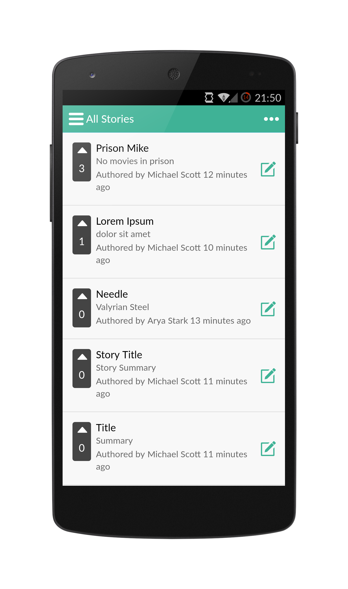
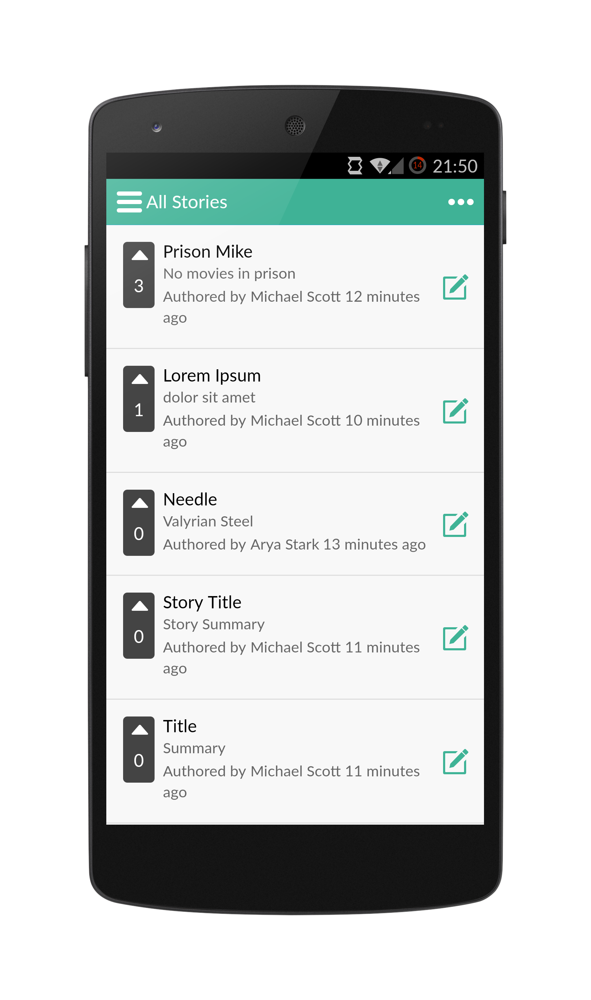

Writr
Writr is a fully collaborative platform which is perfect for all types of writers. Everything is updated in real time - new stories, new authors, new content, votes, etc. This helps us promote complete collaboration amongst our users. Whether you are an aspiring writer or have got some experience under your belt - combine minds with other like-minded individuals and create your next story one sentence at a time. The clean interface will allow you to focus on your writing without distractions. The contribution panel allows you to monitor exactly who has added to your story. Visit any user's profile and check out their stories and contributions to get new ideas for your next story!
 

View all Authors!
View who's using Writr and get new ideas by checking out their profile!
See your Profile
Clean view of user's profile that shows all the stories they have created and their contributions.
View and edit contributions
The contribution panel allows you to track who's added to a story and edit your contributions.
Features
Intuitive
Clean and easy to use design makes writing your frist story a breeze
100% Real-time
Everything is updated in real-time to give you a unique collaborative experience
Fun
Join ideas with other writers and see your stories grow one sentence at a time